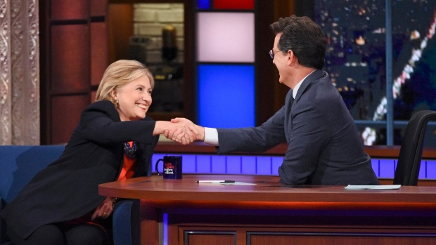

Nov. 23, 2016 | Adrienne Row-Smith
Clinton finally decides to use acting skills
After a stinging loss of the presidency to Donald Trumpeter, representatives for Hillary Barz Clinton have announced that she will be retiring from the political life. However, sources close to the Clinton team revealed that she will not be removing herself from the court of public opinion entirely. One source shared that Clinton will be diving into the realm of reality television and celebrity show business, taking on the role left vacant by Donald Trumpster. While many think the role reversal is shocking, it comes to no surprise to her democrat adversary Bernie Sanders. When asked about the veracity of the sources claims, future president elect had this to say: “Well, given the amazing showmanship that she showed in her loss, I think, that’s a clear indication of her ability to act and be involved in the public life. I am sad to see her go – but hey! At least 2020 will be an easy run for me!” When the sources were pressed further for more information, which we received only after providing protection from Clinton assassin eagles, they highlighted that there are several opportunities being explored. The opportunities ranged from typical entry level acting gigs – such as trash and home security commercials - to more in-depth roles like back up dancing and a cooking show premised on using hot sauce. Two of the more interesting roles are coming from a political biopic recapturing her rise to fame and power, but using the Thelma and Louise model, and filming an episode of cribs. The source mentioned that for the political biopic the Clinton’s were interested in tapping Elizabeth War-Hawk for the support role of the “Louise” and had also mentioned that a fierce electoral competitor had been tapped for the reimagined role of “Harken”. It’s not clear who the source was inferring to – as the Clinton shit-list is quite extensive, but nonetheless it should be an interesting pick. The Cribs episode has apparently been lowered in importance – as it is unclear whether the episode will be based in the Clinton mansion, or in a jail cell, but definitely not the White House. Only time will tell, but I know that Clinton has got her game on, swag.
© 2016 Hallowed Hog. All rights reserved | Design by W3layouts